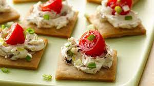
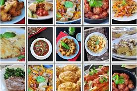
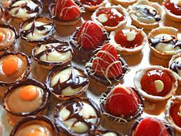

Starter
A starter is a small quantity of food that is served as the first course of a meal
Main Course
Many cultures enjoy full course meals with a unique assortment of food and customs. Full course meals have a rich, diverse history from many regions that is a result of evolving food trends over time.!
Desserts
dessert, the last course of a meal. In the United States dessert is likely to consist of pastry, cake, ice cream, pudding, or fresh or cooked fruit. ... In many cuisines, however, there is no usual sweet course; rather, fresh fruit, tea, or coffee constitute the end of the meal.
